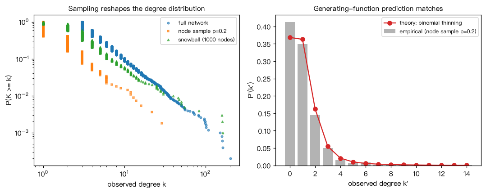

Example08 / 11
采样网络——随机节点采样、随机边采样与滚雪球采样如何改变度分布与其他指标
“真实”网络：N=5000、带三角形闭合倾向的重尾网络（Holme–Kim 模型）。三种不完整观测： (1) 随机节点采样：保留比例 p 的节点及其之间的边（诱导子图），对应“只研究了部分蛋白”； (2) 随机边采样：每条边以概率 q 被检测到，对应实验灵敏度有限； (3) 滚雪球采样：从少数种子出发沿边扩展，对应“从已知疾病基因出发找相互作用”。 解读：节点采样下，原度为 k 的节点观测度服从 Binomial(k, p)，平均度按 p 缩小，分布形状也随之改变； 理论上观测度分布的生成函数为 G0(1 - p + p x)。全局传递性（3×三角形数/连通三元组数）在节点采样下期望近似不变 （三角形与三元组都需要 3 个节点同时被保留），在边采样下约按 q 缩小（三角形需 3 条边，三元组只需 2 条）。 滚雪球采样偏向枢纽：样本节点的真实平均度被高估，局部结构也被放大。
Output输出图

Output文字输出
完整网络 节点= 5000 非孤立节点平均度= 6.00 最大度= 202 k的变异系数=1.42 孤立点占比=0.00 最大连通分支占比=1.00 全局传递性=0.040
节点采样 p=0.5 节点= 2470 非孤立节点平均度= 3.13 最大度= 85 k的变异系数=1.29 孤立点占比=0.08 最大连通分支占比=0.90 全局传递性=0.039
观测平均度=2.89，理论 p·<k>=3.00；同一节点观测度与 p·真实度的相关=0.95
节点采样 p=0.2 节点= 994 非孤立节点平均度= 1.98 最大度= 31 k的变异系数=1.29 孤立点占比=0.35 最大连通分支占比=0.47 全局传递性=0.032
观测平均度=1.29，理论 p·<k>=1.20；同一节点观测度与 p·真实度的相关=0.30
边采样 q=0.5 节点= 5000 非孤立节点平均度= 3.21 最大度= 92 k的变异系数=1.38 孤立点占比=0.07 最大连通分支占比=0.91 全局传递性=0.020
滚雪球 5 种子→1000 点 节点= 1000 非孤立节点平均度= 4.46 最大度= 163 k的变异系数=2.28 孤立点占比=0.00 最大连通分支占比=1.00 全局传递性=0.033
滚雪球样本中节点在完整网络中的平均度=9.88（全网平均 6.00）
k' 理论 P'(k') 经验 P'(k')
0 0.369 0.413
1 0.363 0.349
2 0.162 0.146
3 0.055 0.050
4 0.021 0.015
5 0.010 0.007
6 0.006 0.008
7 0.004 0.001Code代码
# “真实”网络：N=5000、带三角形闭合倾向的重尾网络（Holme–Kim 模型）。三种不完整观测：
# (1) 随机节点采样：保留比例 p 的节点及其之间的边（诱导子图），对应“只研究了部分蛋白”；
# (2) 随机边采样：每条边以概率 q 被检测到，对应实验灵敏度有限；
# (3) 滚雪球采样：从少数种子出发沿边扩展，对应“从已知疾病基因出发找相互作用”。
# 解读：节点采样下，原度为 k 的节点观测度服从 Binomial(k, p)，平均度按 p 缩小，分布形状也随之改变；
# 理论上观测度分布的生成函数为 G0(1 - p + p x)。全局传递性（3×三角形数/连通三元组数）在节点采样下期望近似不变
# （三角形与三元组都需要 3 个节点同时被保留），在边采样下约按 q 缩小（三角形需 3 条边，三元组只需 2 条）。
# 滚雪球采样偏向枢纽：样本节点的真实平均度被高估，局部结构也被放大。
import numpy as np
import networkx as nx
from scipy import stats
rng = np.random.default_rng(21)
G = nx.powerlaw_cluster_graph(5000, 3, 0.3, seed=21)
k_true = np.array([d for _, d in G.degree()])
def summary(H, name):
k = np.array([d for _, d in H.degree()])
k = k[k > 0]
gcc = max((len(c) for c in nx.connected_components(H)), default=0) / max(H.number_of_nodes(), 1)
print(f"{name:<22} 节点={H.number_of_nodes():5d} 非孤立节点平均度={k.mean():5.2f} 最大度={k.max():4d} "
f"k的变异系数={k.std() / k.mean():.2f} 孤立点占比={np.mean([d == 0 for _, d in H.degree()]):.2f} "
f"最大连通分支占比={gcc:.2f} 全局传递性={nx.transitivity(H):.3f}")
return k
summary(G, "完整网络")
for p in (0.5, 0.2):
keep = rng.random(G.number_of_nodes()) < p
H = G.subgraph(np.flatnonzero(keep)).copy()
k_obs = np.array([H.degree(v) for v in H])
summary(H, f"节点采样 p={p}")
# 理论预测：对被保留的节点，E[k_obs] = p * k_true
print(f" 观测平均度={k_obs.mean():.2f}，理论 p·<k>={p * k_true.mean():.2f}；"
f"同一节点观测度与 p·真实度的相关={np.corrcoef(k_obs, p * k_true[keep])[0, 1]:.2f}")
for q in (0.5,):
H = nx.Graph()
H.add_nodes_from(G)
H.add_edges_from(e for e in G.edges() if rng.random() < q)
summary(H, f"边采样 q={q}")
def snowball(G, n_seeds, n_target, rng):
"""从种子出发做广度优先扩展，按发现顺序取前 n_target 个节点。"""
seeds = rng.choice(G.number_of_nodes(), n_seeds, replace=False).tolist()
order, seen, frontier = list(seeds), set(seeds), list(seeds)
while frontier and len(order) < n_target:
nxt = []
for v in frontier:
for u in G.neighbors(v):
if u not in seen:
seen.add(u); order.append(u); nxt.append(u)
frontier = nxt
return G.subgraph(order[:n_target]).copy()
S = snowball(G, 5, 1000, rng)
summary(S, "滚雪球 5 种子→1000 点")
k_in_true = k_true[list(S.nodes())]
print(f" 滚雪球样本中节点在完整网络中的平均度={k_in_true.mean():.2f}（全网平均 {k_true.mean():.2f}）")
# 生成函数核对：节点采样 p=0.2 后，观测度分布 P'(k') = sum_k P(k) C(k,k') p^k' (1-p)^(k-k')
p = 0.2
kmax = k_true.max()
Pk = np.bincount(k_true, minlength=kmax + 1) / len(k_true)
kk = np.arange(kmax + 1)
P_pred = np.array([np.sum(Pk * stats.binom.pmf(j, kk, p)) for j in range(15)])
keep = rng.random(G.number_of_nodes()) < p
H = G.subgraph(np.flatnonzero(keep))
k_obs = np.array([d for _, d in H.degree()])
P_emp = np.bincount(k_obs, minlength=15)[:15] / len(k_obs)
print("k' 理论 P'(k') 经验 P'(k')")
for j in range(0, 8):
print(f"{j:2d} {P_pred[j]:.3f} {P_emp[j]:.3f}")
# 作图：完整网络、节点采样与滚雪球样本的度分布；节点采样后观测度分布的理论与经验对照
import matplotlib.pyplot as plt
fig, ax = plt.subplots(1, 2, figsize=(10, 4))
for kv, lab, mk in [(k_true, "full network", "o"), (k_obs, "node sample p=0.2", "s"),
(np.array([d for _, d in S.degree()]), "snowball (1000 nodes)", "^")]:
kv = np.sort(kv[kv > 0])
ax[0].loglog(kv, 1 - np.arange(len(kv)) / len(kv), mk, ms=3, alpha=0.6, label=lab)
ax[0].set_xlabel("observed degree k"); ax[0].set_ylabel("P(K >= k)"); ax[0].legend(fontsize=8)
ax[0].set_title("Sampling reshapes the degree distribution", fontsize=10)
j = np.arange(15)
ax[1].bar(j, P_emp, color="0.7", label="empirical (node sample p=0.2)")
ax[1].plot(j, P_pred, "o-", color="C3", label="theory: binomial thinning")
ax[1].set_xlabel("observed degree k'"); ax[1].set_ylabel("P'(k')"); ax[1].legend(fontsize=8)
ax[1].set_title("Generating-function prediction matches", fontsize=10)
plt.tight_layout(); plt.show()Run在浏览器中运行
首次加载 Python 环境约需 20–40 秒；可以修改参数后重新运行。